你好，我是陈航。
在前面两篇文章中，我们一起学习了构建视图的基本元素：文本、图片和按钮，用于展示一组连续视图元素的 ListView，以及处理多重嵌套的可滚动视图的 CustomScrollView。
在 Flutter 中，一个完整的界面通常就是由这些小型、单用途的基本控件元素依据特定的布局规则堆砌而成的。那么今天，我就带你一起学习一下，在 Flutter 中，搭建出一个漂亮的布局，我们需要了解哪些布局规则，以及这些规则与其他平台类似概念的差别在哪里。希望这样的设计，可以帮助你站在已有经验的基础上去高效学习 Flutter 的布局规则。
我们已经知道，在 Flutter 中一切皆 Widget，那么布局也不例外。但与基本控件元素不同，布局类的 Widget 并不会直接呈现视觉内容，而是作为承载其他子 Widget 的容器。
这些布局类的 Widget，内部都会包含一个或多个子控件，并且都提供了摆放子控件的不同布局方式，可以实现子控件的对齐、嵌套、层叠和缩放等。而我们要做的就是，通过各种定制化的参数，将其内部的子 Widget 依照自己的布局规则放置在特定的位置上，最终形成一个漂亮的布局。
Flutter 提供了 31 种布局 Widget，对布局控件的划分非常详细，一些相同（或相似）的视觉效果可以通过多种布局控件实现，因此布局类型相比原生 Android、iOS 平台多了不少。比如，Android 布局一般就只有 FrameLayout、LinearLayout、RelativeLayout、GridLayout 和 TableLayout 这 5 种，而 iOS 的布局更少，只有 Frame 布局和自动布局两种。
为了帮你建立起对布局类 Widget 的认知，了解基本布局类 Widget 的布局特点和用法，从而学以致用快速上手开发，在今天的这篇文章中，我特意挑选了几类在开发 Flutter 应用时，最常用也最有代表性的布局 Widget，包括单子 Widget 布局、多子 Widget 布局、层叠 Widget 布局，与你展开介绍。
掌握了这些典型的 Widget，你也就基本掌握了构建一个界面精美的 App 所需要的全部布局方式了。接下来，我们就先从单子 Widget 布局聊起吧。
单子 Widget 布局：Container、Padding 与 Center
单子 Widget 布局类容器比较简单，一般用来对其唯一的子 Widget 进行样式包装，比如限制大小、添加背景色样式、内间距、旋转变换等。这一类布局 Widget，包括 Container、Padding 与 Center 三种。
Container，是一种允许在其内部添加其他控件的控件，也是 UI 框架中的一个常见概念。
在 Flutter 中，Container 本身可以单独作为控件存在（比如单独设置背景色、宽高），也可以作为其他控件的父级存在：Container 可以定义布局过程中子 Widget 如何摆放，以及如何展示。与其他框架不同的是，Flutter 的 Container 仅能包含一个子 Widget。
所以，对于多个子 Widget 的布局场景，我们通常会这样处理：先用一个根 Widget 去包装这些子 Widget，然后把这个根 Widget 放到 Container 中，再由 Container 设置它的对齐 alignment、边距 padding 等基础属性和样式属性。
接下来，我通过一个示例，与你演示如何定义一个 Container。
在这个示例中，我将一段较长的文字，包装在一个红色背景、圆角边框的、固定宽高的 Container 中，并分别设置了 Container 的外边距（距离其父 Widget 的边距）和内边距（距离其子 Widget 的边距）：
Container( child: Text('Container（容器）在 UI 框架中是一个很常见的概念，Flutter 也不例外。'), padding: EdgeInsets.all(18.0), // 内边距 margin: EdgeInsets.all(44.0), // 外边距 width: 180.0, height:240, alignment: Alignment.center, // 子 Widget 居中对齐 decoration: BoxDecoration( //Container 样式 color: Colors.red, // 背景色 borderRadius: BorderRadius.circular(10.0), // 圆角边框 ),)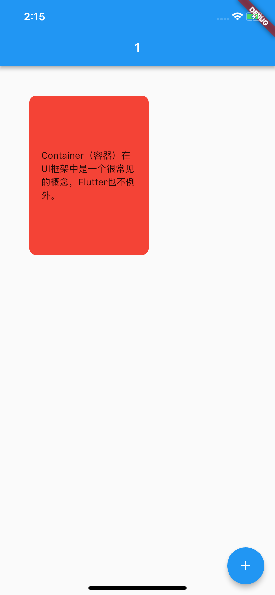
如果我们只需要将子 Widget 设定间距，则可以使用另一个单子容器控件 Padding 进行内容填充：
Padding( padding: EdgeInsets.all(44.0), child: Text('Container（容器）在 UI 框架中是一个很常见的概念，Flutter 也不例外。'),);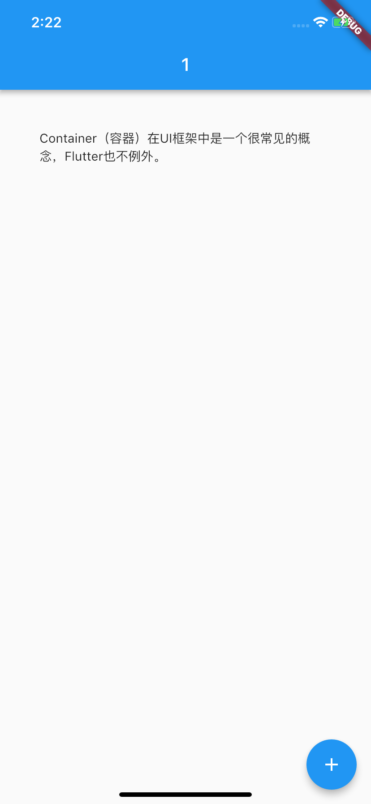
在需要设置内容间距时，我们可以通过 EdgeInsets 的不同构造函数，分别制定四个方向的不同补白方式，如均使用同样数值留白、只设置左留白或对称方向留白等。如果你想更深入地了解这部分内容，可以参考这个API 文档。
接下来，我们再来看看单子 Widget 布局容器中另一个常用的容器 Center。正如它的名字一样，Center 会将其子 Widget 居中排列。
比如，我们可以把一个 Text 包在 Center 里，实现居中展示：
Scaffold( body: Center(child: Text("Hello")) // This trailing comma makes auto-formatting nicer for build methods.);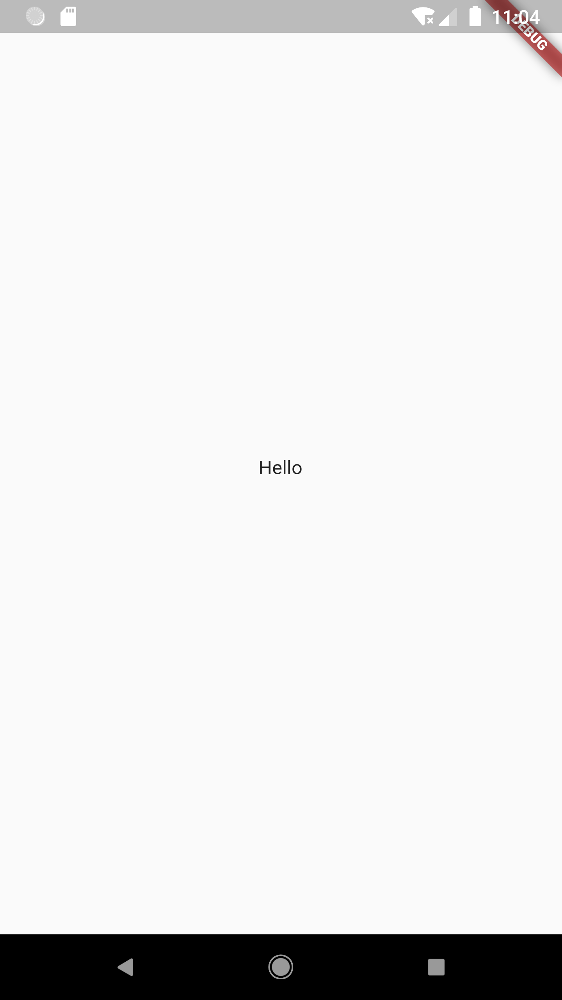
需要注意的是，为了实现居中布局，Center 所占据的空间一定要比其子 Widget 要大才行，这也是显而易见的：如果 Center 和其子 Widget 一样大，自然就不需要居中，也没空间居中了。因此 Center 通常会结合 Container 一起使用。
现在，我们结合 Container，一起看看 Center 的具体使用方法吧。
Container( child: Center(child: Text('Container（容器）在 UI 框架中是一个很常见的概念，Flutter 也不例外。')), padding: EdgeInsets.all(18.0), // 内边距 margin: EdgeInsets.all(44.0), // 外边距 width: 180.0, height:240, decoration: BoxDecoration( //Container 样式 color: Colors.red, // 背景色 borderRadius: BorderRadius.circular(10.0), // 圆角边框 ),);可以看到，我们通过 Center 容器实现了 Container 容器中alignment: Alignment.center的效果。
事实上，为了达到这一效果，Container 容器与 Center 容器底层都依赖了同一个容器 Align，通过它实现子 Widget 的对齐方式。Align 的使用也比较简单，如果你想深入了解的话，可以参考官方文档，这里我就不再过多介绍了。
接下来，我们再看看多子 Widget 布局的三种方式，即 Row、Column 与 Expanded。
多子 Widget 布局：Row、Column 与 Expanded
对于拥有多个子 Widget 的布局类容器而言，其布局行为无非就是两种规则的抽象：水平方向上应该如何布局、垂直方向上应该如何布局。
如同 Android 的 LinearLayout、前端的 Flex 布局一样，Flutter 中也有类似的概念，即将子 Widget 按行水平排列的 Row，按列垂直排列的 Column，以及负责分配这些子 Widget 在布局方向（行 / 列）中剩余空间的 Expanded。
Row 与 Column 的使用方法很简单，我们只需要将各个子 Widget 按序加入到 chiildren 数组即可。在下面的代码中，我们把 4 个分别设置了不同的颜色和宽高的 Container 加到 Row 与 Column 中：
//Row 的用法示范Row( children: <Widget>[ Container(color: Colors.yellow, width: 60, height: 80,), Container(color: Colors.red, width: 100, height: 180,), Container(color: Colors.black, width: 60, height: 80,), Container(color: Colors.green, width: 60, height: 80,), ],); //Column 的用法示范Column( children: <Widget>[ Container(color: Colors.yellow, width: 60, height: 80,), Container(color: Colors.red, width: 100, height: 180,), Container(color: Colors.black, width: 60, height: 80,), Container(color: Colors.green, width: 60, height: 80,), ],);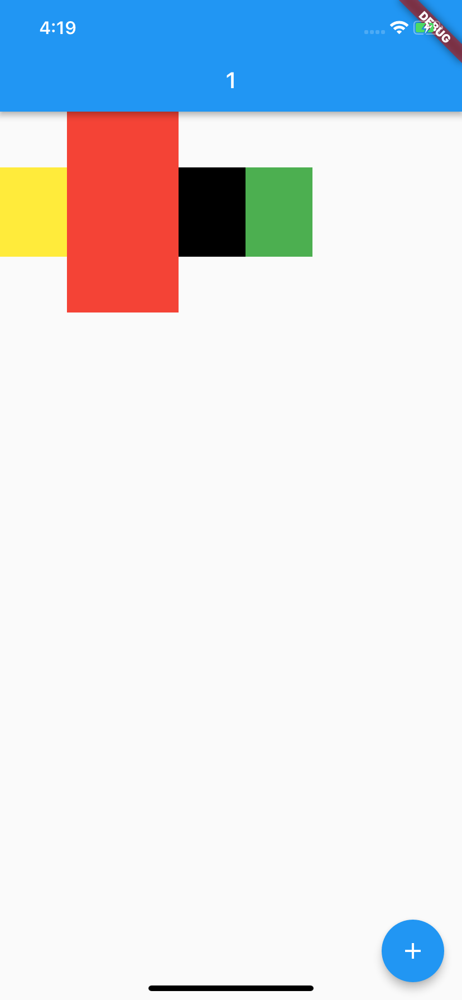
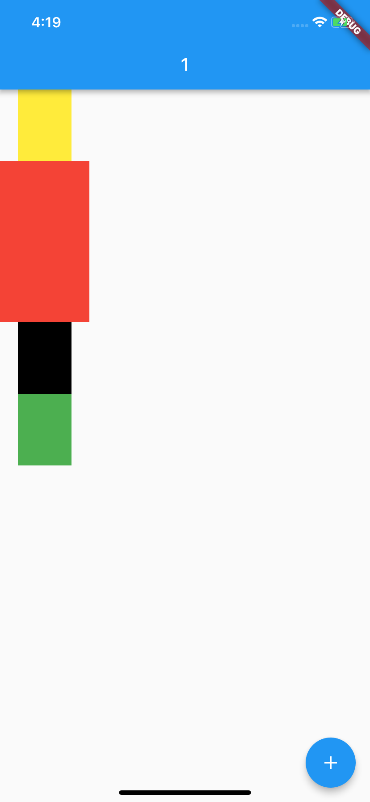
可以看到，单纯使用 Row 和 Column 控件，在子 Widget 的尺寸较小时，无法将容器填满，视觉样式比较难看。对于这样的场景，我们可以通过 Expanded 控件，来制定分配规则填满容器的剩余空间。
比如，我们希望 Row 组件（或 Column 组件）中的绿色容器与黄色容器均分剩下的空间，于是就可以设置它们的弹性系数参数 flex 都为 1，这两个 Expanded 会按照其 flex 的比例（即 1：1）来分割剩余的 Row 横向（Column 纵向）空间：
Row( children: <Widget>[ Expanded(flex: 1, child: Container(color: Colors.yellow, height: 60)), // 设置了 flex=1，因此宽度由 Expanded 来分配 Container(color: Colors.red, width: 100, height: 180,), Container(color: Colors.black, width: 60, height: 80,), Expanded(flex: 1, child: Container(color: Colors.green,height: 60),)/ 设置了 flex=1，因此宽度由 Expanded 来分配 ],);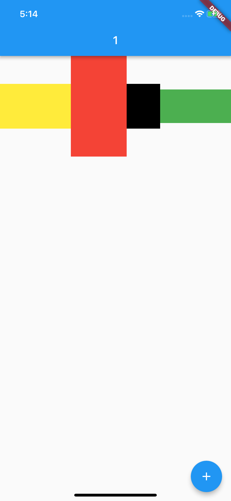
于 Row 与 Column 而言，Flutter 提供了依据坐标轴的布局对齐行为，即根据布局方向划分出主轴和纵轴：主轴，表示容器依次摆放子 Widget 的方向；纵轴，则是与主轴垂直的另一个方向。
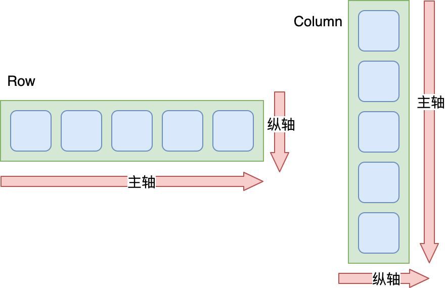
我们可以根据主轴与纵轴，设置子 Widget 在这两个方向上的对齐规则 mainAxisAlignment 与 crossAxisAlignment。比如，主轴方向 start 表示靠左对齐、center 表示横向居中对齐、end 表示靠右对齐、spaceEvenly 表示按固定间距对齐；而纵轴方向 start 则表示靠上对齐、center 表示纵向居中对齐、end 表示靠下对齐。
下图展示了在 Row 中设置不同方向的对齐规则后的呈现效果：
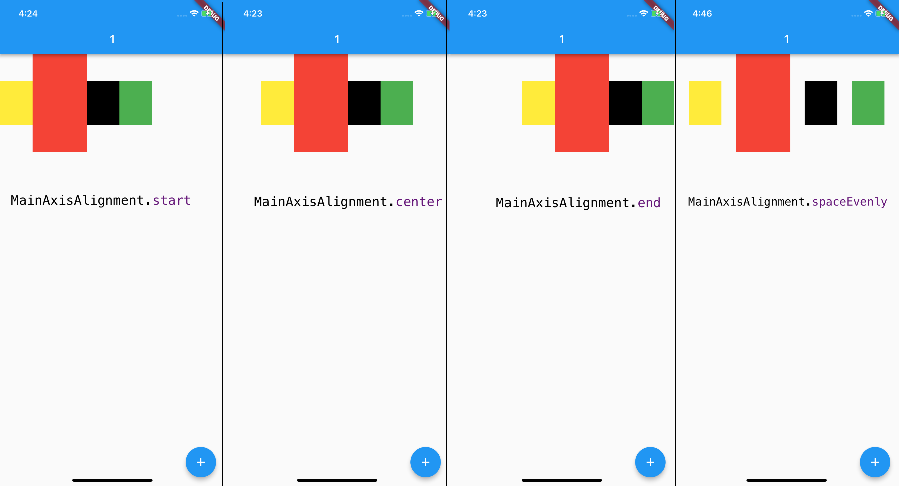
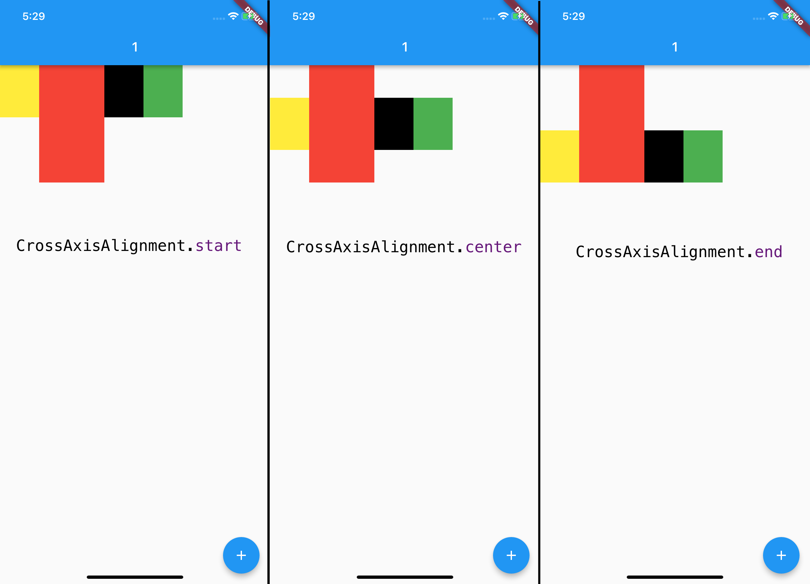
Column 的对齐方式也是类似的，我就不再过多展开了。
这里需要注意的是，对于主轴而言，Flutter 默认是让父容器决定其长度，即尽可能大，类似 Android 中的 match_parent。
在上面的例子中，Row 的宽度为屏幕宽度，Column 的高度为屏幕高度。主轴长度大于所有子 Widget 的总长度，意味着容器在主轴方向的空间比子 Widget 要大，这也是我们能通过主轴对齐方式设置子 Widget 布局效果的原因。
如果想让容器与子 Widget 在主轴上完全匹配，我们可以通过设置 Row 的 mainAxisSize 参数为 MainAxisSize.min，由所有子 Widget 来决定主轴方向的容器长度，即主轴方向的长度尽可能小，类似 Android 中的 wrap_content：
Row( mainAxisAlignment: MainAxisAlignment.spaceEvenly, // 由于容器与子 Widget 一样宽，因此这行设置排列间距的代码并未起作用 mainAxisSize: MainAxisSize.min, // 让容器宽度与所有子 Widget 的宽度一致 children: <Widget>[ Container(color: Colors.yellow, width: 60, height: 80,), Container(color: Colors.red, width: 100, height: 180,), Container(color: Colors.black, width: 60, height: 80,), Container(color: Colors.green, width: 60, height: 80,), ],)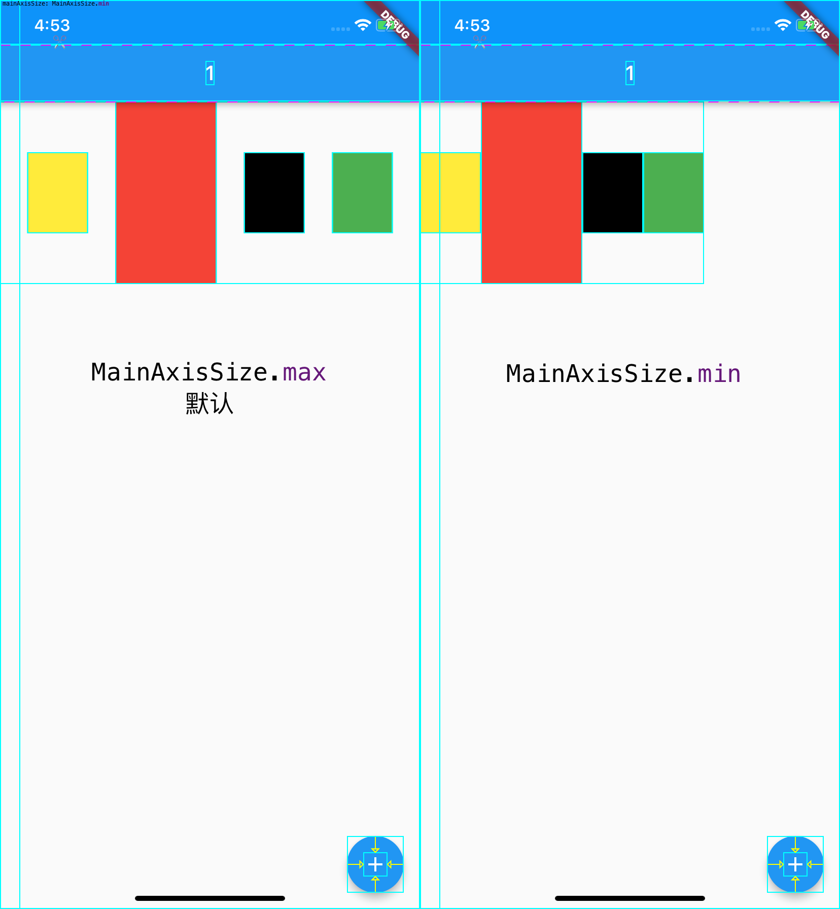
可以看到，我们设置了主轴大小为 MainAxisSize.min 之后，Row 的宽度变得和其子 Widget 一样大，因此再设置主轴的对齐方式也就不起作用了。
层叠 Widget 布局：Stack 与 Positioned
有些时候，我们需要让一个控件叠加在另一个控件的上面，比如在一张图片上放置一段文字，又或者是在图片的某个区域放置一个按钮。这时候，我们就需要用到层叠布局容器 Stack 了。
Stack 容器与前端中的绝对定位、Android 中的 Frame 布局非常类似，子 Widget 之间允许叠加，还可以根据父容器上、下、左、右四个角的位置来确定自己的位置。
Stack 提供了层叠布局的容器，而 Positioned 则提供了设置子 Widget 位置的能力。接下来，我们就通过一个例子来看一下 Stack 和 Positioned 的具体用法吧。
在这个例子中，我先在 Stack 中放置了一块 300300 的黄色画布，随后在 (18,18) 处放置了一个 5050 的绿色控件，然后在 (18,70) 处放置了一个文本控件。
Stack( children: <Widget>[ Container(color: Colors.yellow, width: 300, height: 300),// 黄色容器 Positioned( left: 18.0, top: 18.0, child: Container(color: Colors.green, width: 50, height: 50),// 叠加在黄色容器之上的绿色控件 ), Positioned( left: 18.0, top:70.0, child: Text("Stack 提供了层叠布局的容器 "),// 叠加在黄色容器之上的文本 ) ],)试着运行一下，可以看到，这三个子 Widget 都按照我们预定的规则叠加在一起了。
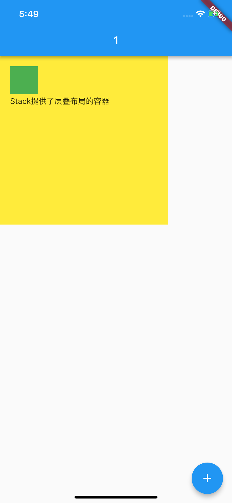
Stack 控件允许其子 Widget 按照创建的先后顺序进行层叠摆放，而 Positioned 控件则用来控制这些子 Widget 的摆放位置。需要注意的是，Positioned 控件只能在 Stack 中使用，在其他容器中使用会报错。
总结
Flutter 的布局容器强大而丰富，可以将小型、单用途的基本视觉元素快速封装成控件。今天我选取了 Flutter 中最具代表性，也最常用的几类布局 Widget，与你介绍了构建一个界面精美的 App 所需要的布局概念。
接下来，我们简单回顾一下今天的内容，以便加深理解与记忆：
首先，我们认识了单子容器 Container、Padding 与 Center。其中，Container 内部提供了间距、背景样式等基础属性，为子 Widget 的摆放方式，及展现样式都提供了定制能力。而 Padding 与 Center 提供的功能，则正如其名一样简洁，就是对齐与居中。
然后，我们深入学习了多子 Widget 布局中的 Row 和 Column，各子 Widget 间对齐的规则，以及容器自身扩充的规则，以及如何通过 Expanded 控件使用容器内部的剩余空间，
最后，我们学习了层叠布局 Stack，以及与之搭配使用的，定位子 Widget 位置的 Positioned 容器，你可以通过它们，实现多个控件堆放的布局效果。
通过今天的文章，相信你已经对如何搭建 App 的界面有了足够的知识储备，所以在下一篇文章中，我会通过一些实际的例子，带你认识在 Flutter 中，如何通过这些基本控件与布局规则，实现好看的界面。
思考题
最后，我给你留下一道思考题吧。
Row 与 Column 自身的大小是如何决定的？当它们嵌套时，又会出现怎样的情况呢？
欢迎你在评论区给我留言分享你的观点，我会在下一篇文章中等待你！感谢你的收听，也欢迎你把这篇文章分享给更多的朋友一起阅读。

COMMUNITY NOTES
读者评论
看其他资料不会举例子所以有时候看的一头雾水，陈航老师就会举例子，让人一看就知道就是这么回事，很棒
使用 Android studio 如何在手机屏幕上查看控件所占有的位置大小
Stack布局中最下面一行文字应该是叠加在绿色视图上的吧，只是由于位置的原因向下偏移了
满满的干货
Row与Column是根据mainSize以及父Widget共同决定，如果父Widget没法确定大小，那么Row与Column就会出错
自身大小由主轴的大小属性确定，MainAxisSize.max。当它们嵌套时，还是按照自身的属性，确定主轴、纵轴、和自己的定位。
老师讲得真好，之前看了很多Flutter布局的书，都没有讲到要点，看了老师这篇文章，真的是醍醐灌顶啊！